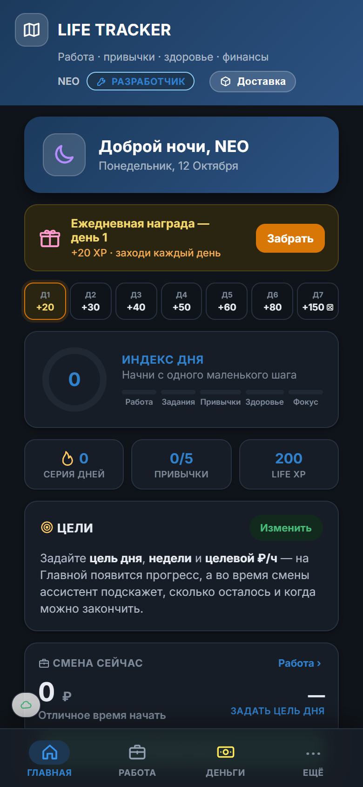
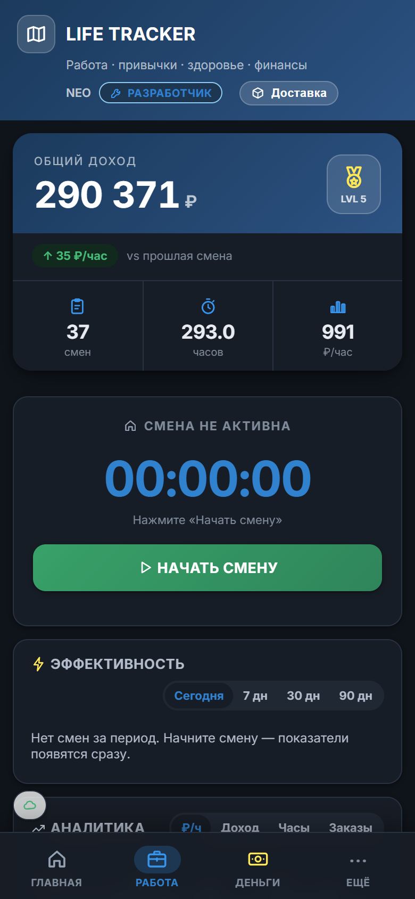
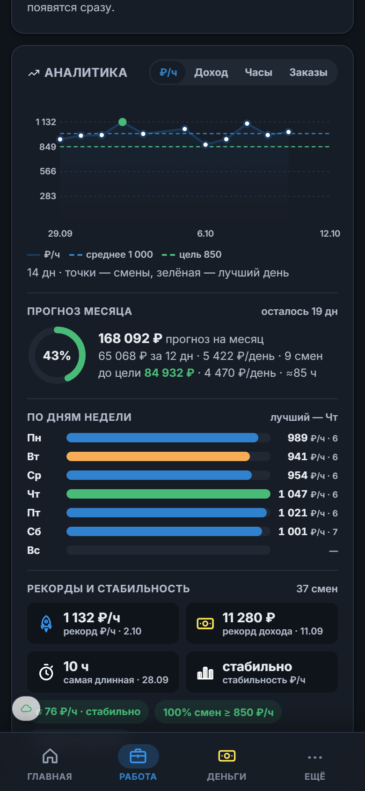
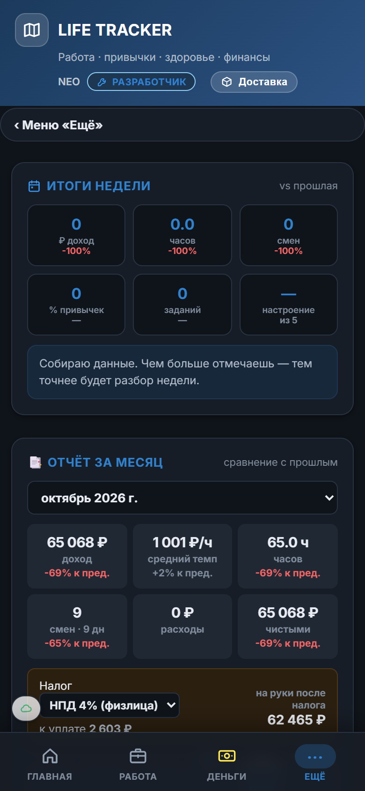
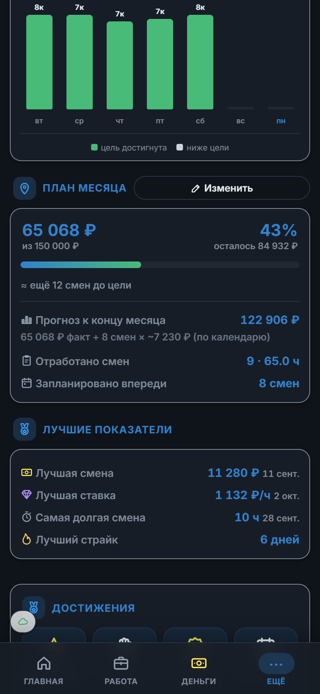

Life Tracker — трекер для тех, кто работает сменами. Запусти смену, жми +1 на каждом заказе и смотри живой ₽/час, прогноз месяца и чистый доход после расходов и налога. Плюс привычки, задания и деньги — в одном приложении, без подписки.
Открыть приложениеКод на GitHub




Таймер, перерывы, счётчик заказов, живой ₽/час и прогноз дохода. Ассистент сравнивает с твоим средним и напоминает про перерыв.
Цель → факт / прогноз / «ещё N смен». Отметь смены в календаре — прогноз пересчитается сразу.
Лучшие дни недели, эффективность по времени старта, рекорды, стабильность, дельта к прошлому периоду.
KPI месяца, НПД / УСН / НДФЛ, график 6 месяцев, экспорт PDF и CSV — для самозанятости и Excel.
Уровни за смены и часы, серия дней, награды за возврат, магазин бустов и тем.
Данные в облаке между устройствами, офлайн-очередь, мгновенный старт из кэша, JSON-бэкап.